Faculty with a focus in Ecology, Evolution and Behavior (EEB) conduct research in all areas of Ecology including, but not limited to Aquatic Ecology, Plant Ecology, Restoration Ecology, Tropical Ecology; Biotechnical Molecular Ecology; Microbial Ecology; Evolutionary Developmental Biology; Phycology; Systematics and Behavior.
Research Interests: My research interests are in the formal and informal educational applications of real-time or near real-time data (RTD) and ocean observatory systems in science education. My primary focus is on curriculum development using RTD to teach science concepts in the K-16 level and I am most interested in estuarine habitats and how the use of RTD affects ocean literacy. (Back to top)
Research Interests: Much of my research has focused on the importance of dispersal on population dynamics and community composition in aquatic systems. Movements of water and air, such as currents and wind, mediate dispersal of aquatic organisms, but are often unpredictable. I have been interested in how these stochastic factors affecting dispersal influence ecological processes within aquatic systems. My work has included studies of the impact of wind and floods on freshwater zooplankton populations, the importance of current-related variation in recruitment of sessile marine benthos from planktonic larvae in seagrass beds, the influence of landscape on the distribution of stream macroinvertebrates, the effects of meteorological events on water quality and phytoplankton populations in a freshwater reservoir, and, most recently, the influence of macrophytes on predation of freshwater zooplankton. (Back to top)
Research Interest: The Davis Lab studies the developmental mechanisms of vertebrate morphogenesis, with a emphasis on musculoskeletal complexes such as paired appendages (fins and limbs) and jaws. We take a broadly comparative approach, utilizing basal actinopterygians such as the North American paddlefish Polyodon spathula, chondrichthyans, and even basal tetrapods to test hypotheses about the evolution of development. Click for more information about his research
Research Interests: My expertise is in aquatic ecology with a particular emphasis on fish diversity, distribution and abundance in freshwater streams and rivers. My research has included investigations on brook and rainbow trout abundance in the southern Appalachians, the impact of stream channel modifications on the federally endangered Roanoke logperch, recolonization success of stream fish following fish kills, use of underwater observation for monitoring fish populations, documentation of the distribution and abundance of both fish and freshwater mussels in a variety of flowing water systems, the use of fish community structure in bioassessment, and investigations of the effects of human barriers to stream fish movement and dispersal. I have ongoing contracts with two local water authorities to assist with bioassessments in Paulding and Cobb Counties. As a result, I sample fishes in 6 to 12 streams each summer and I always welcome participation (both formal and informal) by undergraduates in data collection. (Back to top)
Research Interests:The Ganser lab takes an integrative approach to conservation by studying how environmental perturbations affect the development of essential patterned motor behaviors. Using zebrafish and Xenopus as model systems, we employ physiological, molecular, developmental, and behavioral techniques to look at how common environmental pollutants influence the development of vital motor behavioral circuits that govern escape response, locomotion, eating, and reproduction. These animal models allow us a close-up perspective into the ontogenetic establishment of motor circuit synapses as well as the resultant behavioral phenotypes in pollutant-exposed animals. For these patterned behaviors to function properly, a balance between excitatory and inhibitory interneuron inputs onto motor neurons must develop during critical embryonic growth periods. Disruption of these critical periods due to pollutant exposure can skew the balanced development of synaptic inputs, ultimately affecting an animal’s means of escaping predators, capturing prey, and finding a mate and reproducing. We focus our studies on a common pollutant group that is also a putative endocrine disruptor and neurotoxin, the polybrominated diphenyl ether flame retardants (PBDEs). Because PBDEs are ubiquitous environmental pollutants, we can assay how relevant concentrations of PBDEs affect patterned behavioral circuits. We are concerned with how both the neurotoxic and endocrine disrupting properties of PBDEs influence motor circuit development, as some neural pathways for patterned reproductive behaviors like mate calling and amplexus are also hormone dependent. Our research not only has conservation implications for identifying possible contributions to amphibian decline in the state of Georgia, but also for identifying how pollutants may affect human health (Back to top)
Research Interest:I'm a theoretical ecologist. Basically, I use equations and computer simulations to ask questions like: When should a given trait be advantageous to an organism? or How should a given biological phenomenon affect the properties of an ecological community?
Lately I've been especially interested in the ways in which various mutualisms and foraging or defensive behaviors each correspond to unique subwebs, with specific patterns of direct and indirect effects. I'm comparing models of different mutualisms/behaviors, models in which patterns of direct and indirect effects only partially correspond to any particular mutualism/behavior, and models in which patterns of effects are completely randomized. (Back to top)
Research Interest:The impact of invasive alien plant species in natural ecosystems is an emerging environmental problem. Members of my lab have been actively carrying out research on the most notorious alien plant species in Southeastern USA such as kudzu. Integrated restoration strategies that aim at establishing aggressive native plants in kudzu monopopulation have been the aim of this work. The initial work has shown that allelopathic effects of certain native trees can slow down kudzu invasion. Current research focuses on the extent of allelopathic effect of native trees on kudzu and their impact in controlling kudzu invasion. (Back to top)
Research Interest:My research involves studying the ecology and physiology of plants. Specifically I am interested in the interplay between water availability, plant photosynthetic rates, and plant distribution patterns. In this research I incorporate both classical ecological methods (e.g. quadrats and transects to look at patterns of distribution), and new techniques such as stable isotopes (e.g. stable carbon isotope signatures, d13C; to determine long term integrated water use efficiency of plants, and stable isotopes of hydrogen dD to look at source water use; e.g. deep, groundwater sources versus shallow sources). Over the last few years, as part of research proposed in my NSF/RUI grant (# 0516387), my research has focused on understanding water acquisition patterns of trees and how these patterns may influence the structure and function of some of the most endangered terrestrial ecosystems of the world: tropical dry forests; in this case, those of the Yucatan Peninsula of Mexico. (Back to top)
Research interests: My research interests are in molecular ecology. In particular, I am interested in collaborative and continuing research that will increase our understanding of how ecological factors structure genetic variation within and among natural populations and communities. I use descriptive field work to generate hypotheses that can be tested through field and laboratory experimentation. I have created opportunities for undergraduate research at KSU by collaborating with faculty both here and at other institutions with different expertise from ecologists, physiologists, and microbiologists. My research program offers projects that are local (Genetic Characterization of the Stone Roller (Campostoma anomalum) in the Etowah River System), and I offer research opportunities through study abroad (Mexico: Differences in Source Water Use of Woody Vegetation of Dzibilchatun in the Yucatan Peninsula, and Canada: Population dynamics of Wood Frogs (Rana sylvatica) in northern Canada). The field and laboratory nature of data collection associated with my research allows for the inclusion of both highly motivated directed study students, and student volunteers who may be unsure about their specific interests in the area of molecular ecology and biology. I follow a student–centered learning model that provides hands-on experience with laboratory techniques such as PCR and DNA sequencing. This experience allows students to appreciate the unity and diversity present in biological systems and the challenges biologists face when trying to ask and answer what seem to be relatively straight-forward questions. (Back to top)
Research interests: The primary focus of my work is in water-borne diseases.Aeromonads are widespread, aquatic bacteria of which some are pathogens of aquatic animals and humans. Aeromonas hydrophila is one species thatcauses various diseases in animals including highly destructive, soft tissue infections. In humans, the disease can manifest as a localized cellulitis or a disseminated “flesh-eating” condition. In fish, amphibians and reptiles the disease can occur as localized lesions or a blood-borne septicemia. Current projects in this area focus on the tissue-degrading enzymes produced by this bacterium, development of a PCR diagnostic test to detect this bacterium in water and clinical samples, the use of multi-locus sequence typing as a means of identifying closely-related species and the development of a suitable animal model to study bacterium: host dynamics. Additional work in my lab revolves around water quality analysis. Water suitable for human consumption and recreation, as well as ecosystem sustainability require testing methods that can indicate when there are problems and where the problems may originate. Microbial Source Tracking (MST) is the use of fecal-associated microbes, primarily bacteria, to determine the presence of potential harmful microbes in water, the level of Public Health risk for those using the water and the potential source of the waste. Current projects in this area focus on the use of specific bacteria as indicators of pollution sources and the use of diagnostic tests to detect the levels of these microbes.
Research Interest: I use DNA and RNA to answer interesting organismal-level evolutionary questions in parasitic plants. My current research primarily involves Cuscuta (dodders), a large genus of parasitic angiosperm vines in the Morning Glory Family (Convolvulaceae) that lack roots and expanded leaves. These parasites produce very little chlorophyll and obtain all their nutrition through rows of organs known as haustoria which penetrate the host stem to connect the parasite's vasculature with that of the host. Despite this heterotrophic nutritional mode, most members of the genus retain a subset of photosynthetic genes ostensibly for efficient lipid production in developing seeds. Projects in my lab involve examining the genes involved in haustorial formation, evolution of photosynthetic genes and lipid biosynthesis, and population genetics of rare and locally distributed species of Cuscuta. Click for more information about his research
Research Interest: My interests focus on the ecology of aquatic plants and algae that are the base of highly productive submerged aquatic ecosystems. These organisms are important community components that provide food and shelter for resident animals, stabilize sediments, alter hydrodynamics, help regulate dissolved oxygen concentrations, and participate in nutrient and carbon cycling. Unfortunately, many of these communities are disappearing around the globe due to anthropogenic and natural disturbances. As a result, it is essential to understand how these systems respond to disturbances and develop methods for monitoring and conserving these valuable habitats. My research investigates how environmental stressors affect community interactions and ecosystem processes to better inform our efforts to preserve valuable ecosystem services. (Back to top)
Research Interest: Sustainability: investigating ways to promote energy savings and clean commuting options in the university setting. Animal communication: investigating the modes and meaning of animal signals, with an emphasis on insect and avian acoustic communication. (Back to top)
Research Interest:Research in my lab focuses on the evolution of biological function in ectothermic vertebrates. I like to explore the physiological mechanisms that allow animals to survive in challenging environments. From natural extremes (winters in the north) to man-made disturbances, the physiological range of vertebrate systems is amazing to behold and my lab likes to delve into all aspects. My lab focuses on research involving fishes, amphibians (mostly frogs), and reptiles (mostly turtles) and working with me will require plenty of hands-on animal care and laboratory activity sprinkled with field experiences. Click for more information about his research (Back to top)
Research Interest: My major research interest is the investigation of toxicity of metals and ionic liquids to native wetland plant species. Currently, most regulations are based on data obtained by testing toxicity using common agricultural species, or in some cases, algae. It is unclear whether the data obtained using these surrogate species adequately protect native wetland plants. Therefore, one aim of my research has been to determine whether or not native species are more or less tolerant of metals and ionic liquids as compared to the commonly used agricultural species. Ionic liquids are liquid salts that have recently been intensively investigated as “green” alternatives to the organic chemical solvents currently used in industrial applications. Few studies have been done so far to determine the effects of these chemicals on aquatic systems. Therefore, currently I have a student working on the toxicity of these chemicals to the native plants duckweed (Lemna gibba) and swamp milkweed (Asclepias incarnata). More students could easily be fit into this project.
Pink Lady’s Slippers (Cypripedium acuale)
Since 2004 (excepting 2009) there has been an ongoing study of the population dynamics of our campus Pink Lady’s Slipper population. The long-term study has been focused on yearly leaf emergence and blooming dates, and locations of individuals within the population.
(Back to top)
Research Interests: My primary research interest is in the evolutionary origins of human language. I am interested in the processes that selected for adaptive prerequisite behaviors and structures, as well as how these mechanisms operate on both an evolutionary and individual time scale. My research focuses on animal communication, specifically primate vocal and gestural behavior, the communicative function of these signals, and how individuals produce and perceive these utterances. Currently, my research is supported by the National Institute on Deafness and Other Communication Disorders. (Back to top)

Ecology, Evolution and Behavior (EEB)
Faculty with a focus in Ecology, Evolution and Behavior (EEB) conduct research in all areas of Ecology including, but not limited to Aquatic Ecology, Plant Ecology, Restoration Ecology, Tropical Ecology; Biotechnical Molecular Ecology; Microbial Ecology; Evolutionary Developmental Biology; Phycology; Systematics and Behavior.
Faculty
Featured Faculty Research
Lisa Adams, Ph. D.
contact
Research Interests: My research interests are in the formal and informal educational applications of real-time or near real-time data (RTD) and ocean observatory systems in science education. My primary focus is on curriculum development using RTD to teach science concepts in the K-16 level and I am most interested in estuarine habitats and how the use of RTD affects ocean literacy.
(Back to top)
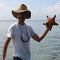Joseph Dirnberger, Ph. D.
contact
Research Interests: Much of my research has focused on the importance of dispersal on population dynamics and community composition in aquatic systems. Movements of water and air, such as currents and wind, mediate dispersal of aquatic organisms, but are often unpredictable. I have been interested in how these stochastic factors affecting dispersal influence ecological processes within aquatic systems. My work has included studies of the impact of wind and floods on freshwater zooplankton populations, the importance of current-related variation in recruitment of sessile marine benthos from planktonic larvae in seagrass beds, the influence of landscape on the distribution of stream macroinvertebrates, the effects of meteorological events on water quality and phytoplankton populations in a freshwater reservoir, and, most recently, the influence of macrophytes on predation of freshwater zooplankton.
(Back to top)
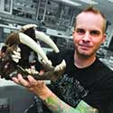Marcus Davis, Ph.D.
contact
Research Interest: The Davis Lab studies the developmental mechanisms of vertebrate morphogenesis, with a emphasis on musculoskeletal complexes such as paired appendages (fins and limbs) and jaws. We take a broadly comparative approach, utilizing basal actinopterygians such as the North American paddlefish Polyodon spathula, chondrichthyans, and even basal tetrapods to test hypotheses about the evolution of development. Click for more information about his research
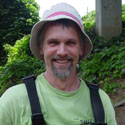Bill Ensign, Ph. D.
contact
Research Interests: My expertise is in aquatic ecology with a particular emphasis on fish diversity, distribution and abundance in freshwater streams and rivers. My research has included investigations on brook and rainbow trout abundance in the southern Appalachians, the impact of stream channel modifications on the federally endangered Roanoke logperch, recolonization success of stream fish following fish kills, use of underwater observation for monitoring fish populations, documentation of the distribution and abundance of both fish and freshwater mussels in a variety of flowing water systems, the use of fish community structure in bioassessment, and investigations of the effects of human barriers to stream fish movement and dispersal. I have ongoing contracts with two local water authorities to assist with bioassessments in Paulding and Cobb Counties. As a result, I sample fishes in 6 to 12 streams each summer and I always welcome participation (both formal and informal) by undergraduates in data collection.
(Back to top)
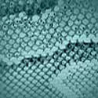Lisa Ganser, Ph. D.
contact
Research Interests:The Ganser lab takes an integrative approach to conservation by studying how environmental perturbations affect the development of essential patterned motor behaviors. Using zebrafish and Xenopus as model systems, we employ physiological, molecular, developmental, and behavioral techniques to look at how common environmental pollutants influence the development of vital motor behavioral circuits that govern escape response, locomotion, eating, and reproduction. These animal models allow us a close-up perspective into the ontogenetic establishment of motor circuit synapses as well as the resultant behavioral phenotypes in pollutant-exposed animals. For these patterned behaviors to function properly, a balance between excitatory and inhibitory interneuron inputs onto motor neurons must develop during critical embryonic growth periods. Disruption of these critical periods due to pollutant exposure can skew the balanced development of synaptic inputs, ultimately affecting an animal’s means of escaping predators, capturing prey, and finding a mate and reproducing. We focus our studies on a common pollutant group that is also a putative endocrine disruptor and neurotoxin, the polybrominated diphenyl ether flame retardants (PBDEs). Because PBDEs are ubiquitous environmental pollutants, we can assay how relevant concentrations of PBDEs affect patterned behavioral circuits. We are concerned with how both the neurotoxic and endocrine disrupting properties of PBDEs influence motor circuit development, as some neural pathways for patterned reproductive behaviors like mate calling and amplexus are also hormone dependent. Our research not only has conservation implications for identifying possible contributions to amphibian decline in the state of Georgia, but also for identifying how pollutants may affect human health
(Back to top)
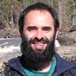Antonio Golubski, Ph. D.
contact
Research Interest:I'm a theoretical ecologist. Basically, I use equations and computer simulations to ask questions like: When should a given trait be advantageous to an organism? or How should a given biological phenomenon affect the properties of an ecological community?
Lately I've been especially interested in the ways in which various mutualisms and foraging or defensive behaviors each correspond to unique subwebs, with specific patterns of direct and indirect effects. I'm comparing models of different mutualisms/behaviors, models in which patterns of direct and indirect effects only partially correspond to any particular mutualism/behavior, and models in which patterns of effects are completely randomized.
(Back to top)
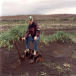Sigurdur Greipsson, Ph. D.
contact
Research Interest:The impact of invasive alien plant species in natural ecosystems is an emerging environmental problem. Members of my lab have been actively carrying out research on the most notorious alien plant species in Southeastern USA such as kudzu. Integrated restoration strategies that aim at establishing aggressive native plants in kudzu monopopulation have been the aim of this work. The initial work has shown that allelopathic effects of certain native trees can slow down kudzu invasion. Current research focuses on the extent of allelopathic effect of native trees on kudzu and their impact in controlling kudzu invasion.
(Back to top)
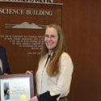Paula Jackson, Ph. D.
contact
Research Interest:My research involves studying the ecology and physiology of plants. Specifically I am interested in the interplay between water availability, plant photosynthetic rates, and plant distribution patterns. In this research I incorporate both classical ecological methods (e.g. quadrats and transects to look at patterns of distribution), and new techniques such as stable isotopes (e.g. stable carbon isotope signatures, d13C; to determine long term integrated water use efficiency of plants, and stable isotopes of hydrogen dD to look at source water use; e.g. deep, groundwater sources versus shallow sources). Over the last few years, as part of research proposed in my NSF/RUI grant (# 0516387), my research has focused on understanding water acquisition patterns of trees and how these patterns may influence the structure and function of some of the most endangered terrestrial ecosystems of the world: tropical dry forests; in this case, those of the Yucatan Peninsula of Mexico.
(Back to top)
Thomas McElroy, Ph. D.
contact
Research interests: My research interests are in molecular ecology. In particular, I am interested in collaborative and continuing research that will increase our understanding of how ecological factors structure genetic variation within and among natural populations and communities. I use descriptive field work to generate hypotheses that can be tested through field and laboratory experimentation. I have created opportunities for undergraduate research at KSU by collaborating with faculty both here and at other institutions with different expertise from ecologists, physiologists, and microbiologists. My research program offers projects that are local (Genetic Characterization of the Stone Roller (Campostoma anomalum) in the Etowah River System), and I offer research opportunities through study abroad (Mexico: Differences in Source Water Use of Woody Vegetation of Dzibilchatun in the Yucatan Peninsula, and Canada: Population dynamics of Wood Frogs (Rana sylvatica) in northern Canada). The field and laboratory nature of data collection associated with my research allows for the inclusion of both highly motivated directed study students, and student volunteers who may be unsure about their specific interests in the area of molecular ecology and biology. I follow a student–centered learning model that provides hands-on experience with laboratory techniques such as PCR and DNA sequencing. This experience allows students to appreciate the unity and diversity present in biological systems and the challenges biologists face when trying to ask and answer what seem to be relatively straight-forward questions.
(Back to top)
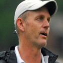Donald McGarey, Ph. D.
contact
Research interests: The primary focus of my work is in water-borne diseases. Aeromonads are widespread, aquatic bacteria of which some are pathogens of aquatic animals and humans. Aeromonas hydrophila is one species thatcauses various diseases in animals including highly destructive, soft tissue infections. In humans, the disease can manifest as a localized cellulitis or a disseminated “flesh-eating” condition. In fish, amphibians and reptiles the disease can occur as localized lesions or a blood-borne septicemia. Current projects in this area focus on the tissue-degrading enzymes produced by this bacterium, development of a PCR diagnostic test to detect this bacterium in water and clinical samples, the use of multi-locus sequence typing as a means of identifying closely-related species and the development of a suitable animal model to study bacterium: host dynamics. Additional work in my lab revolves around water quality analysis. Water suitable for human consumption and recreation, as well as ecosystem sustainability require testing methods that can indicate when there are problems and where the problems may originate. Microbial Source Tracking (MST) is the use of fecal-associated microbes, primarily bacteria, to determine the presence of potential harmful microbes in water, the level of Public Health risk for those using the water and the potential source of the waste. Current projects in this area focus on the use of specific bacteria as indicators of pollution sources and the use of diagnostic tests to detect the levels of these microbes.
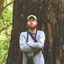Joel McNeal, Ph.D.
contact
Research Interest: I use DNA and RNA to answer interesting organismal-level evolutionary questions in parasitic plants. My current research primarily involves Cuscuta (dodders), a large genus of parasitic angiosperm vines in the Morning Glory Family (Convolvulaceae) that lack roots and expanded leaves. These parasites produce very little chlorophyll and obtain all their nutrition through rows of organs known as haustoria which penetrate the host stem to connect the parasite's vasculature with that of the host. Despite this heterotrophic nutritional mode, most members of the genus retain a subset of photosynthetic genes ostensibly for efficient lipid production in developing seeds. Projects in my lab involve examining the genes involved in haustorial formation, evolution of photosynthetic genes and lipid biosynthesis, and population genetics of rare and locally distributed species of Cuscuta. Click for more information about his research
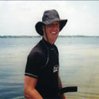Troy Mutchler, Ph. D.
contact
Research Interest: My interests focus on the ecology of aquatic plants and algae that are the base of highly productive submerged aquatic ecosystems. These organisms are important community components that provide food and shelter for resident animals, stabilize sediments, alter hydrodynamics, help regulate dissolved oxygen concentrations, and participate in nutrient and carbon cycling. Unfortunately, many of these communities are disappearing around the globe due to anthropogenic and natural disturbances. As a result, it is essential to understand how these systems respond to disturbances and develop methods for monitoring and conserving these valuable habitats. My research investigates how environmental stressors affect community interactions and ecosystem processes to better inform our efforts to preserve valuable ecosystem services.
(Back to top)
R.C. Paul, Ph. D.
contact
Research Interest: Sustainability: investigating ways to promote energy savings and clean commuting options in the university setting. Animal communication: investigating the modes and meaning of animal signals, with an emphasis on insect and avian acoustic communication.
(Back to top)
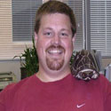Scott Reese, Ph.D.
contact
Research Interest:Research in my lab focuses on the evolution of biological function in ectothermic vertebrates. I like to explore the physiological mechanisms that allow animals to survive in challenging environments. From natural extremes (winters in the north) to man-made disturbances, the physiological range of vertebrate systems is amazing to behold and my lab likes to delve into all aspects. My lab focuses on research involving fishes, amphibians (mostly frogs), and reptiles (mostly turtles) and working with me will require plenty of hands-on animal care and laboratory activity sprinkled with field experiences. Click for more information about his research
(Back to top)
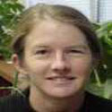Heather Sutton, Ph. D.
contact
Research Interest: My major research interest is the investigation of toxicity of metals and ionic liquids to native wetland plant species. Currently, most regulations are based on data obtained by testing toxicity using common agricultural species, or in some cases, algae. It is unclear whether the data obtained using these surrogate species adequately protect native wetland plants. Therefore, one aim of my research has been to determine whether or not native species are more or less tolerant of metals and ionic liquids as compared to the commonly used agricultural species. Ionic liquids are liquid salts that have recently been intensively investigated as “green” alternatives to the organic chemical solvents currently used in industrial applications. Few studies have been done so far to determine the effects of these chemicals on aquatic systems. Therefore, currently I have a student working on the toxicity of these chemicals to the native plants duckweed (Lemna gibba) and swamp milkweed (Asclepias incarnata). More students could easily be fit into this project.
Pink Lady’s Slippers (Cypripedium acuale)
Since 2004 (excepting 2009) there has been an ongoing study of the population dynamics of our campus Pink Lady’s Slipper population. The long-term study has been focused on yearly leaf emergence and blooming dates, and locations of individuals within the population.
(Back to top)
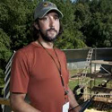Jared Taglialatela, Ph. D.
contact
Research Interests: My primary research interest is in the evolutionary origins of human language. I am interested in the processes that selected for adaptive prerequisite behaviors and structures, as well as how these mechanisms operate on both an evolutionary and individual time scale. My research focuses on animal communication, specifically primate vocal and gestural behavior, the communicative function of these signals, and how individuals produce and perceive these utterances. Currently, my research is supported by the National Institute on Deafness and Other Communication Disorders.
(Back to top)